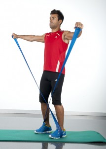

Elongación para aliviar el dolor de espalda
2021.12.08 10:40

Skip to main content Arthritis -health.com Sports -health.com Conditions Arthritis Chronic Pain Degenerative Disc Disease Herniated Disc Lower Back Pain Neck Pain Osteoporosis Sciatica Spinal Stenosis All Conditions Treatment Alternative Care Artificial Disc Replacement Back Surgery Chiropractic Injections Pain Management Pain Medication Physical Therapy Spinal Fusion All Treatments Wellness Ergonomics Exercise Massage Therapy Nutrition, Diet, and Weight Loss Sleep Stop Smoking Yoga, Pilates, and Tai Chi All Wellness Videos Degenerative Disc Disease Videos Exercise Videos Herniated Disc Videos Injection Videos Lower Back Pain Videos Neck Pain Videos Sciatica Videos Spinal Stenosis Videos Surgery Videos All Videos Resources Blog Education Centers En Español Find a Spine Center Find a Physician/Surgeon Free Newsletters Pain Glossary You are here Espanol Ejercicio Fisico
Elongación para aliviar el dolor de espalda
share pin it Newsletters By Peter Ullrich, MD | Peer ReviewedCasi todos pueden beneficiarse de la elongación de los tejidos blandos —los músculos, los ligamentos y los tendones— de la espalda, las piernas, los glúteos y la zona que se encuentra alrededor de la columna vertebral.
La columna vertebral y sus músculos, ligamentos y tendones contiguos están todos diseñados para moverse, por lo que las limitaciones a ese movimiento pueden hacer que el dolor de espalda se torne peor.
Véase Anatomía de la columna vertebral y dolor de espalda
Los pacientes con un dolor de espalda constante pueden observar que se requieren semanas o meses de elongación y de otros ejercicios para la espalda para movilizar la columna vertebral y los tejidos blandos, pero también verán que el alivio sostenido y significativo del dolor de espalda es una consecuencia directa del aumento del movimiento.
Consejos generales de elongación para el alivio del dolor de espalda
Recuerde lo siguiente cuando comience con una rutina de elongación como parte de un programa de ejercicios para la espalda:
Use ropa cómoda que no sea muy ceñida La elongación no debe causar dolor; no obligue a su cuerpo a adoptar posiciones difíciles Realice la elongación lentamente y evite los rebotes, lo cual puede causar desgarros de los músculos Elongue sobre una superficie limpia y plana que sea lo suficientemente grande para poder moverse libremente Sostenga los ejercicios de elongación por suficiente tiempo (20-30 segundos) para permitir que los músculos o articulaciones se suelten Repita el ejercicio de elongación, generalmente de 5 a 10 vecesSi una persona ya tiene lumbalgia o cervicalgia, lo mejor es chequear con un médico o fisioterapeuta para verificar si puede hacer los siguientes ejercicios para el dolor en la espalda baja, los hombros y el cuello.
Elongación del cuello y de los hombros
advertisementLa rigidez en la espalda algunas veces está acompañada de rigidez en el cuello . Se pueden realizar los siguientes ejercicios para elongar el área del cuello y de los hombros.
Elongación de flexión: mentón al pecho
Mientras esté parado o sentado, incline suavemente la cabeza y lleve el mentón hacia el pecho hasta que sienta la elongación en la parte posterior del cuello.
Flexión lateral: oreja al hombro
Este ejercicio elonga el área del cuello que está debajo de las orejas, así como la parte superior del hombro. Para comenzar, incline suavemente el cuello hacia un lado como si quisiera tocar el hombro con la oreja hasta que sienta cómo elonga el costado de su cuello. Cambie para elongar ambos lados.
Para una descripción más detallada con imágenes, vea Elongación del cuelloEjercicios para la elongación de la espalda
Muchos pacientes que tienen dolor de espalda conocen la sensación de tensión en la espalda, especialmente a la mañana cuando se levantan. Estos ejercicios para la elongación de la espalda pueden ayudar a recuperar algo de flexibilidad y aumentar la movilidad, disminuyendo así el dolor de espalda y la incomodidad.
Ejercicio de flexión de espalda
SaveMientras está acostado sobre su espalda, lleve ambas rodillas al pecho al mismo tiempo que flexiona la cabeza hacia el pecho hasta sentir una elongación cómoda en posición fetal.
Elongación con rodilla al pecho
SaveMientras se encuentre acostado sobre su espalda con las rodillas dobladas y ambos talones en el piso, coloque ambas manos en una rodilla y lleve la rodilla al pecho.
In This Article:
Ejercicio físico y dolor de espalda Elongación para aliviar el dolor de espalda Elongaciones específicas de los músculos isquiotibiales para el alivio del dolor de espalda Ejercicios para el fortalecimiento de la espalda Ejercicio aeróbico de bajo impactoElongación de la cadera y los glúteos
Las caderas y las nalgas (donde se encuentran los músculos del glúteo) soportan la espalda baja y la elongación de estos músculos tiene un rol esencial en el mantenimiento de la flexibilidad de la columna.
Elongación de las caderas
Mientras esté parado con los pies separados y paralelos a la altura de los hombros, haga medio paso hacia atrás con el pie derecho, incline la rodilla izquierda y lleve el peso hacia la cadera derecha. Con la pierna derecha en posición recta, inclínese un poco más hacia adelante y lleve la pierna derecha hacia abajo hasta sentir la elongación en la cadera externa.
Elongación del músculo piriforme
SaveEl músculo piriforme se extiende a lo largo de los glúteos y puede contribuir al dolor de espalda o de piernas. Para elongar este músculo, recuéstese sobre su espalda y cruce una pierna sobre la otra y suavemente lleve la otra rodilla al pecho hasta sentir la elongación en el área del glúteo.
Para más información: Elongación del músculo piriforme y fisioterapia
Next Page: Elongaciones específicas de los músculos isquiotibiales para el alivio del dolor de espalda Pages: 1 2 3 4 5Editor's Top Picks
Fisioterapia y ejercicios para la ciática
Ejercicios de cuello para la cervicalgia
Elongación del cuello
Ejercicios para el alivio del dolor ciático
advertisement
advertisement
Find a Spine Centeradvertisement
Health Information (Sponsored)
Subscribe to Our Newsletters
Get Veritas Health eNewsletters delivered to your inbox.
Subscribe NowSpine-health.com Resources
Authors Education Centers En Español Find a Back Doctor Find Support Glossary Join Our Physician Directory Spine Pain TopicsAbout Veritas Health
About Us Accessibility Advertising and Sponsorship Guidelines Awards Careers Contact Us Editorial Process News Privacy Policy Terms of UseOther Veritas Health Websites:
Arthritis-health Sports-health Pain-healthView site: Desktop | Mobile
This site is for educational purposes only; no information is intended or implied to be a substitute for professional medical advice. The information is produced and reviewed by over 200 medical professionals with the goal of providing trusted, uniquely informative information for people with painful health conditions.
© 1999-2021 Veritas Health, LLC . All rights reserved.
Veritas Health, LLC , 520 Lake Cook Road, Suite 350 , Deerfield , IL , 60015 .
prime | version.2021.07.010-2021.07.004
- Los mejores ejercicios para fortalecer la espalda y corregir la .
- Ejercicios de espalda en casa - Mundo Deportivo
- Los 15 mejores ejercicios para una espalda y dorsales en V
- Ejercicios para fortalecer la espalda sin hacernos daño
- 5 ejercicios básicos para lograr una espalda descomunal - AS .
- Los mejores ejercicios para acabar con el dolor de espalda
- 6 ejercicios con el propio peso para una espalda fuerte
- Los 11 mejores ejercicios para entrenar tu espalda en el .
- Guía de ejercicios para la parte baja de la espalda (Back .
- Ejercicios para la espalda en 15 minutos diarios - Mayo Clinic
- Los mejores ejercicios para fortalecer la espalda y corregir la .
en casa · Pues bien, este ejercicio de las dominadas deslizantes es uno de los más reputados a la hora de fortalecer y . - Ejercicios de espalda en casa - Mundo Deportivo
- Los 15 mejores ejercicios para una espalda y dorsales en V
- Ejercicios para fortalecer la espalda sin hacernos daño
- 5 ejercicios básicos para lograr una espalda descomunal - AS .
- Los mejores ejercicios para acabar con el dolor de espalda
- 6 ejercicios con el propio peso para una espalda fuerte
- Los 11 mejores ejercicios para entrenar tu espalda en el .
- Guía de ejercicios para la parte baja de la espalda (Back .
- Ejercicios para la espalda en 15 minutos diarios - Mayo Clinic
en casa · Pues bien, este ejercicio de las dominadas deslizantes es uno de los más reputados a la hora de fortalecer y .
